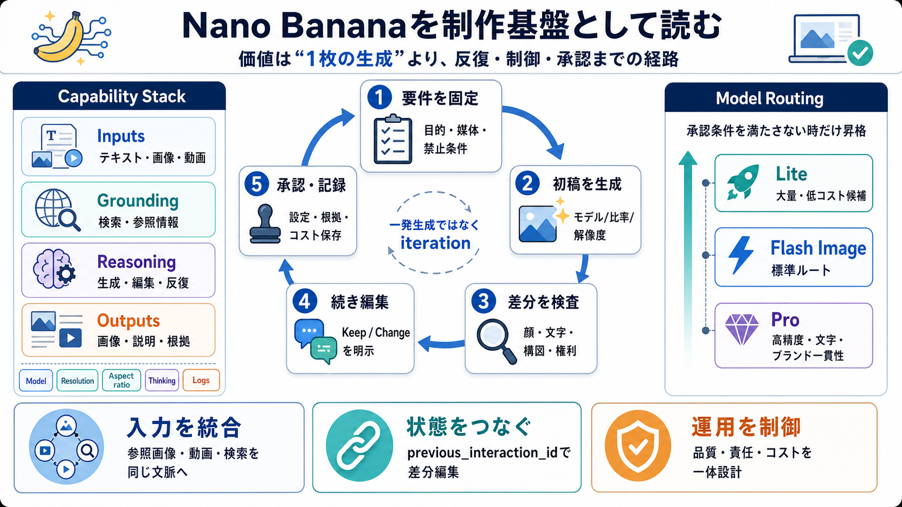

入力を統合する
プロンプトだけでなく、参照画像、動画、Google Searchの情報を同じ生成文脈に載せる。

Image Workflow
Gemini APIの画像生成は、テキスト・画像・動画・検索をつなぎ、生成から再編集、引用、監査までを扱う制作基盤へ進化している。
Core Thesis
単発の生成品質は入口にすぎない。実務価値は、入力を増やし、会話で修正し、媒体要件と責任要件を保ったまま承認まで進められることにある。
プロンプトだけでなく、参照画像、動画、Google Searchの情報を同じ生成文脈に載せる。
previous_interaction_idを使い、構図や人物を維持しながら差分指示を反映する。
モデル、解像度、比率、思考レベル、引用表示、レビュー、コストを一体で設計する。
Capability Stack
Nano Bananaの本質は、複数の入力、モデル推論、編集、出力制御を一つの経路に束ねることだ。
要件、既存アセット、人物、商品、映像内の出来事を文脈として渡す。
天気、株価、イベントなど、最新の現実世界情報を追加する。
モデルが構図、文字、スタイル、差分指示を解釈し、画像へ反映する。
画像だけでなく、interleaved出力や検索メタデータを応答に含める。
Model Portfolio
Nano Banana系列は、速度・コスト・推論・文字描画・高解像度の要求に応じて使い分ける前提になっている。
| Model | Primary role | Strength | Operational watch |
|---|---|---|---|
| Gemini 3.1 Flash Lite ImageNano Banana 2 Lite | 大量・低コスト候補 | 速度と費用を優先する軽量生成 | 解像度、品質、機能上限を実測する |
| Gemini 3.1 Flash ImageNano Banana 2 | 汎用の第一候補 | 速度、品質、長い要件のバランス | 標準ルートとして回帰テストを持つ |
| Gemini 3 Pro ImageNano Banana Pro | 高難度アセット | 複雑な推論、ブランド一貫性、文字精度 | 費用と待ち時間を承認価値で正当化する |
| Gemini 2.5 Flash ImageNano Banana | 既存互換・移行元 | 既存プロンプトと実装資産を活用しやすい | 3.1系列への比較・移行計画を持つ |
Routing Logic
全リクエストをProへ送る必要はない。承認基準に応じて、安価な経路から段階的に昇格させる。
大量バリエーション、初期ラフ、低リスク素材。品質不足時だけ上位モデルへ再送する。
一般的な生成・編集・長文指示の標準ルート。速度と品質の基準点として運用する。
ブランド表現、文字中心の制作物、複雑な構図、人物・商品の一貫性が重要な案件。
Iteration Loop
初回出力を完成品と見なさず、検査と差分修正を繰り返す。マルチターン編集は、制作工程そのものをAPI化する。
目的、媒体、禁止条件、保持対象、文字列を先に定義する。
適切なモデル、比率、解像度で候補を作る。
顔、ロゴ、文字、構図、権利、事実性を比較する。
変更点と不変条件を明示し、同じ文脈で修正する。
人が採否を決め、設定、根拠、コストを保存する。
Stateful Editing
previous_interaction_idで直前の生成文脈を参照し、全体を作り直すのではなく、差分だけを指示できる。
turn_1 = generate( model = "Flash Image", instruction = "Create the campaign visual" ) turn_2 = edit( previous_interaction_id = turn_1.id, instruction = "Keep people, layout and colors. Change only the headline to Japanese." )
Reference Control
複数参照は、人物・商品・スタイル・構図の整合性を高める。ただし入力枚数と最終画像への再現数は一致しないことがある。
人物、商品、ロゴなど、同一性を保ちたい対象を役割付きで指定する。
色調、質感、照明、イラスト技法を別の参照として分離する。
配置やカメラ角度は、内容参照と混同せず明示的に説明する。
Live Grounding
Google Searchや画像検索を組み合わせると、天気、株価、イベントなどの最新情報をビジュアルへ反映できる。
「今日の天気」「直近の市場情報」など、モデル知識だけでは不十分な要求。
テキスト検索や画像検索から関連する根拠と候補を取得する。
取得情報を構図、図版、見出し、説明へ組み込み、画像を生成する。
URL citation、attribution、search_suggestionsを応答とUIへ引き継ぐ。
Product Contract
検索連動はモデル設定だけでは完了しない。根拠を利用者に見せるフロントエンド要件と、法務・権利確認が同時に発生する。
Input Boundaries
すべてのモデルが、すべての入力形式を同じように扱えるわけではない。入力経路はモデル能力と前処理の責任範囲に合わせて分ける。
生成要件、編集差分、禁止条件、文字列、媒体指定の中心となる。
生成元、編集対象、人物・商品・スタイル参照として複数入力できる。
対応モデルに限り、映像の内容や場面からインサイトを抽出し画像化する。
音声を直接の画像生成入力として扱わない。必要なら上流で文字起こしする。
Output Control
解像度やアスペクト比は指定できるが、記法と対応範囲はモデル依存だ。不正値を生成APIへ流す前に、用途別の許可表で検証する。
| Control | Examples | Business use | Validation |
|---|---|---|---|
| Resolution | 512 / 1K / 2K / 4K | ラフ、Web、印刷、高精細アセット | 対応モデルを確認し、1Kなど指定記法を固定 |
| Aspect ratio | 1:1 / 9:16 / 16:9 / 21:9 | SNS、縦型広告、Web、ワイドバナー | 媒体テンプレート別に許可値を列挙 |
| Modalities | IMAGE / TEXT + IMAGE | 画像単体、説明付き、interleaved応答 | レスポンスのpart種別を順序依存で扱わない |
| Thinking level | 低遅延 ↔ 高度推論 | 単純変換と複雑な構成判断の切り替え | 品質向上とトークン・待ち時間を同時に測定 |
| Count / Batch | 複数出力・一括実行 | 大量生成、夜間処理、候補比較 | 要求枚数と実出力数の差を許容して再処理 |
Prompt Craft
文字描画精度が向上しても、ロゴや小さな文字は失敗し得る。コピーを先に確定し、配置と優先順位を構造化してから画像化する。
正確な文字列、言語、改行、句読点、大文字小文字を引用符で明示する。
位置、幅、行数、余白、階層、フォントの性格、背景とのコントラストを定義する。
OCRや目視で誤字、欠字、文字化け、ロゴ変形を確認し、差分だけ再編集する。
API Contract
Python、JavaScript、RESTの違いより、要求・応答・根拠を同じ監査単位として保存できることが重要だ。
request = {
model: routed_model,
contents: [text, images, video],
tools: [google_search?],
generation_config: {
aspect_ratio, image_size,
response_modalities, thinking_level
},
previous_interaction_id: optional
}
response = {
parts: [text?, image?],
interaction_id: "...",
grounding_metadata: {
citations, search_suggestions,
attribution
},
usage: tokens / cost signals,
status: accepted / retry / rejected
}
Production Loop
画像生成APIは出力装置であり、承認装置ではない。分類、権利確認、モデル選択、検査、再実行、記録を外側に置く。
用途、リスク、媒体、人物、検索要否を分類する。
権利、入力形式、解像度、比率、禁止条件を検証する。
コストと承認条件に応じてLite、Flash、Proを選ぶ。
意図、文字、同一性、事実性、権利、表示要件を確認する。
編集者が承認、差分再編集、上位モデル昇格を決める。
何回まで再試行するか、どの欠陥でモデルを昇格するかを決める。
広告、公開記事、人物、法的表示を伴う成果物は人が採否を持つ。
モデル、設定、入力ハッシュ、出力、引用、レビュー結果、費用を保存する。
Governance Layer
権利、透明性、安全、プライバシーを後付けにすると、検索・人物・広告利用で設計をやり直すことになる。
利用権限を持つ画像だけを入力し、検索結果の閲覧可能性と再利用権を混同しない。
SynthIDの埋め込み、検索引用、attribution、search_suggestionsを適切に保持する。
欺瞞、嫌がらせ、危害、不正利用を禁止し、人物・センシティブ用途を高リスク扱いにする。
個人情報、同意、Cookie、広告・分析目的のデータ利用をフロントまで含めて設計する。
Known Limits
生成結果の揺れをゼロにはできない。既知の制約ごとに、検査・再編集・利用禁止のルールを割り当てる。
| Known limit | What can happen | Design response |
|---|---|---|
| 言語・文字描画 | 小さい文字、ロゴ、複雑な多言語表記が崩れる | copy-first、OCR、目視、差分編集、必要なら後工程で組版 |
| 画像数・要素数 | 要求枚数や参照要素が完全には反映されない | 実出力を数え、欠落分だけ再実行する |
| 顔・ロゴの保持 | 編集時に高忠実度対象も微妙に変化する | 不変条件を明示し、類似度・ブランド検査を行う |
| 検索と人物実写 | 権利、本人性、安全、表示義務のリスクが高い | 高リスクルートへ分離し、権利・法務承認を必須化 |
| 動画・音声 | 動画は対応モデル限定、音声入力は未対応 | モデル能力表と前処理フォールバックを持つ |
| モデル依存設定 | 解像度、比率、思考、応答形式の対応差がある | モデル別スキーマ検証と回帰テストを自動化する |
Unit Economics
安い生成が再試行を増やせば、承認済みアセットの単価は上がる。品質、待ち時間、再実行、人手を一つの原価として測る。
承認された1成果物あたりの総費用。モデル比較の中心指標にする。
平均だけでなく裾の長い待ち時間を測り、同期・非同期経路を分ける。
再試行率、上位モデル昇格率、人手却下率を用途別に記録する。
案件別の上限、バッチ停止、日次予算、異常な出力数を監視する。
Migration Clock
Imagenは2026年8月17日に廃止予定とされる。Nano Banana系列への移行は、機能刷新ではなく供給停止リスクへの事業継続対応だ。
利用API、プロンプト、参照画像、解像度、依存機能、品質基準を一覧化する。
2.5、3.1 Flash、Proを同じgolden setで比較し、差分と代替策を確定する。
本番トラフィック、障害時フォールバック、運用文書、監査経路を移行済みにする。
Adoption Gates
PoCの美しい数枚だけで本番判断をしない。品質、運用、ガバナンスの出口条件を満たすたびに利用範囲を広げる。
代表案件のgolden setを作り、モデル別に文字、同一性、構図、比率、失敗率、費用を比較する。
人手承認、検索引用UI、権利確認、ログ、再実行ポリシーを備え、低リスク案件で稼働する。
モデル自動選択、予算閾値、バッチ、監視、モデル更新時の回帰試験を整備して範囲を広げる。
Final Takeaway
Nano Bananaは、遊びの画像生成から実務の制作基盤へ移行できる能力を持つ。その価値を引き出す順序は、品質追求より先に、制御・再現・説明責任を設計することだ。
Source Check
本デッキは提供された要約・論点・FAQ・意見を一次素材として再構成した。モデルID、価格、制限、廃止日、表示義務は公式情報で最終確認する。
モデル、生成・編集、参照画像、解像度、アスペクト比、サンプル、Imagen移行情報。
ai.google.dev/gemini-api/docs/image-generation検索ツール、grounding metadata、引用、検索候補、UI要件。
ai.google.dev/gemini-api/docs/google-search動画入力の対応方法、モデル能力、入力制限、前処理に関する確認先。
ai.google.dev/gemini-api/docs/video-understanding入力・出力・キャッシュ・バッチ・モデル別料金を本番見積もりへ反映する。
ai.google.dev/gemini-api/docs/pricing利用階層、リクエスト制限、トークン制限、バッチ処理条件の確認先。
ai.google.dev/gemini-api/docs/rate-limits利用規約、不正利用禁止、安全要件、利用者の権利・責任を確認する。
ai.google.dev/gemini-api/terms欺瞞、危害、嫌がらせ、違法・権利侵害用途などの禁止範囲。
policies.google.com/terms/generative-ai/use-policy生成コンテンツへ埋め込まれる透かし技術と、由来確認の位置づけ。
deepmind.google/technologies/synthid/Model ID、提供地域、SLA、レイテンシ、料金、出力上限、検索表示、廃止日をリリース前に再確認。
ai.google.dev/gemini-api/docsNo references found